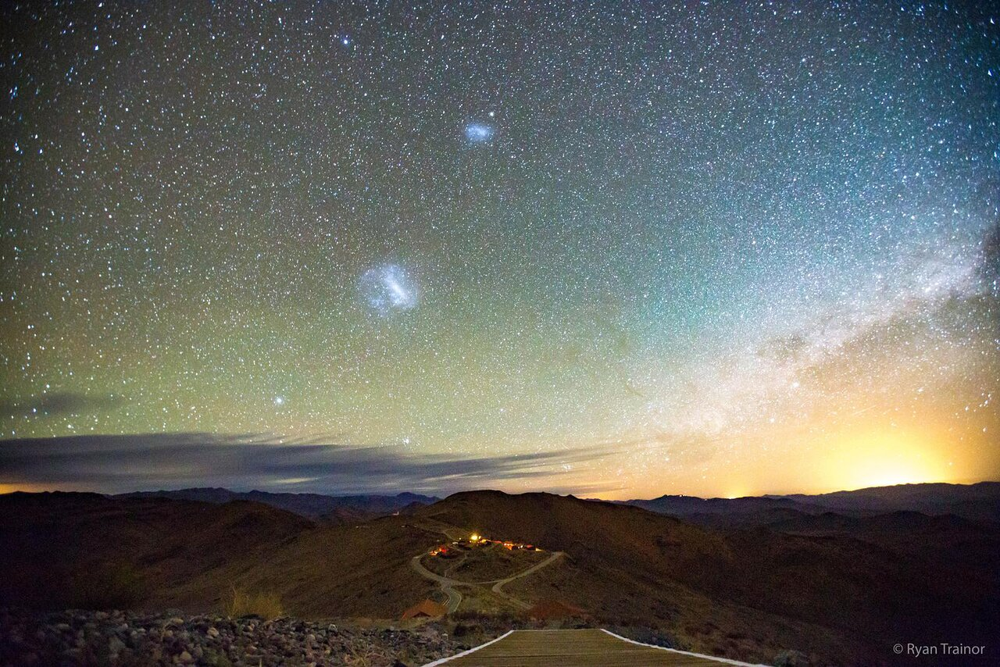
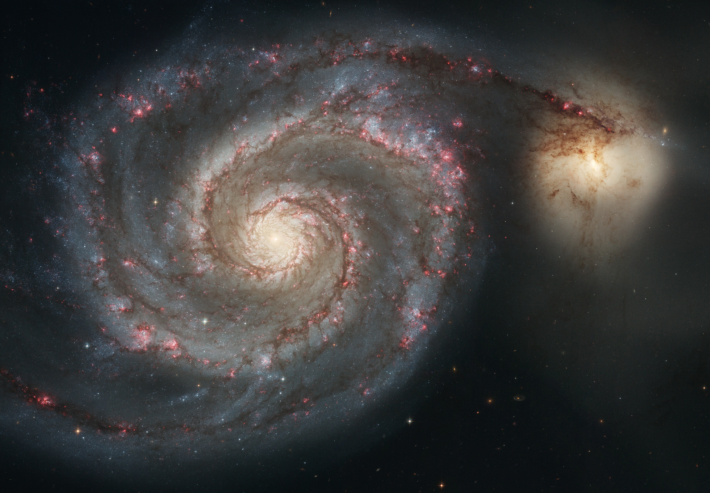
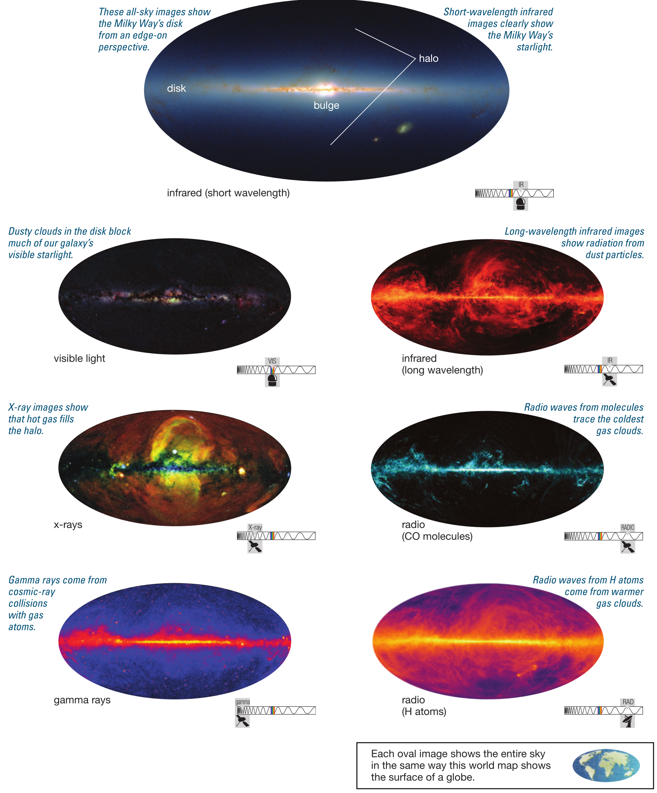
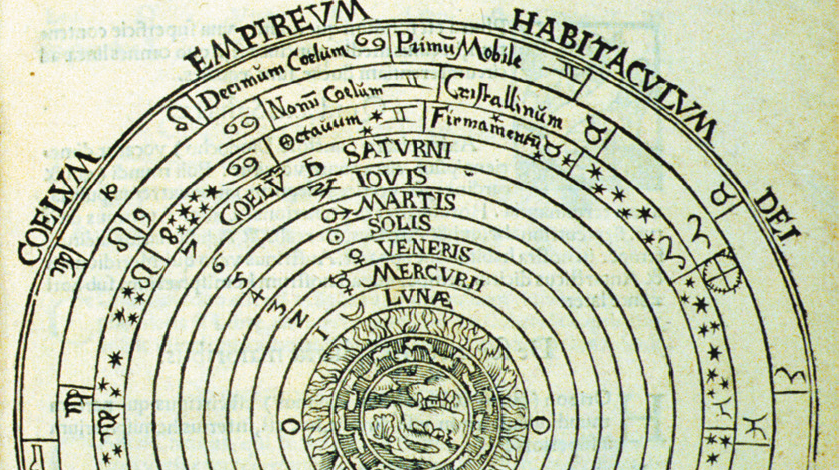
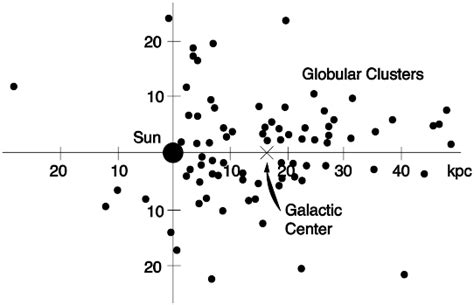
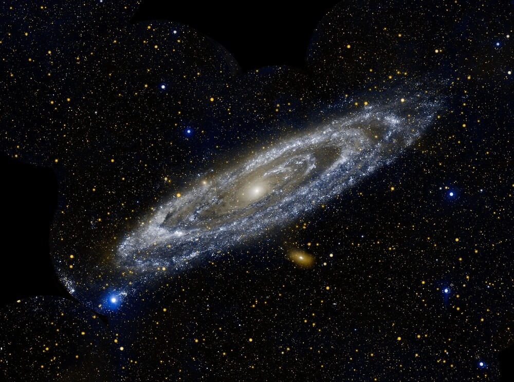
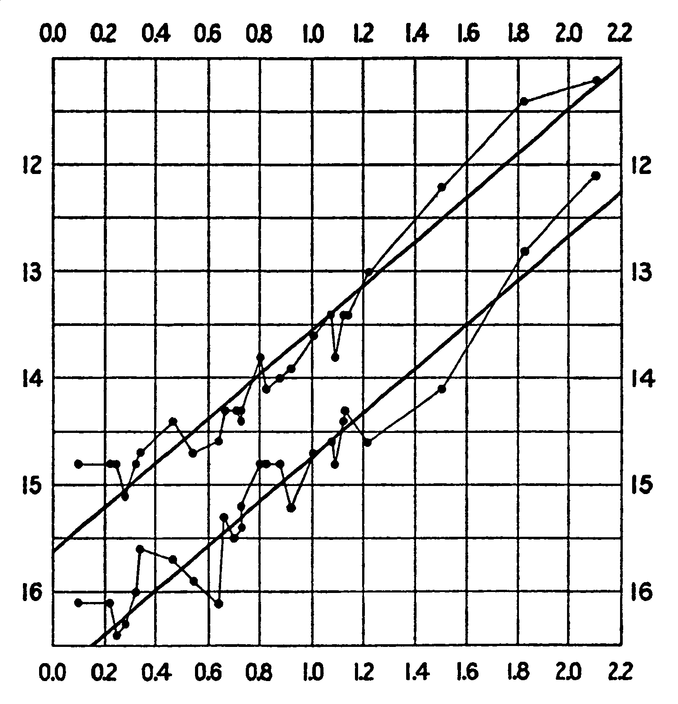

Reading: Chapter 19, 20, 21
Recap
- Top Hat Q1:
- nucleosynthesis
- Gas cycling
- disk (later)
The geography of Tucson, and local regulation on light pollution, make it great for stargazing (see here for specific places recommended by "Southern Arizona Dark Sky"). Throughout most of the 10s of thousands of years of human history, most people had access to an even better view, and many saw what the Greeks called the "Milky way".

The Clouds

In the southern hemisphere, there are also two bright "patches", now unfortunately known as the Large and Small Magellanic Cloud (LMC & SMC).
Magellan was not even the first to report them in the limited context of western Europe, and proposals to change the name to retain the acronym have been discussed (e.g., Magellan → Milky, APS).
Note however that the nature of these extended sources was unclear, and the clouds are not the only extended sources (there are others in both hemispheres), complicating their interpretation.
What is a galaxy?
We now know that these are "galaxies".

In the modern definition, a galaxy is a gravitationally bound system of stars (including their remnants and planets), gas, dust, and dark matter.
The "Milky way" is the projection on the sky of one of its spiral arms!

In common astrophysical jargon we use Milkyway (MW) to refer to the entire Galaxy hosting the Solar system, and not just the visible arm appearing like a whiteish glow in a dark night. But this embeds an understanding that is far from trivial! Figuring out how stars are distributed and what is the place of the Solar system in this took a long path.
The textbook analogy is that it is like trying to understand the shape of the house sitting within the kitchen. You can see some outside from a window, but there are thick walls everywhere blocking your view!
Multi-λ view of the Milky way
Even today, despite a multiwavelength view of the Galaxy, we are still learning about the structure!

Nevertheless, comparative studies are crucial to understand the evolution of galaxies and how it shapes their structures. JWST and soon Roman have IR detectors which allow astronomers to detect galaxies farther away (meaning earlier in the Universe's evolution!) to directly map the phases of galactic evolution!
Timeline
A brief and partial timeline of the shaping of the idea of "island Universes" or galaxies:
In the Aristotelian tradition, the question of the distribution of stars in the sky did not really exist: they occupied the outermost celestial sphere, and the apparent clumping was of no concern. Their lack of detectable annual parallax (by naked eye) was considered evidence for the lack of orbital motion of the Earth.

Figure 6: Medieval illustration of an Aristotelian geocentric Universe In the 1600s, Galileo's pointing of telescopes to the night sky showed that the Milky way, and extended bright clumps were actually made of many stars. He did not solve the parallax issue existing since ancient Greece but made it less of an issue.

Figure 7: Galileo sketches of the Orion region (left) and Pleiadis (right): his telescope allowed him to distinguish an unprecedented number of stars. Siblings William and Carolina Hershel tried to map the shape of the Milky way from star counts and determined it was a flattened disk, so not a uniform distribution.

Figure 8: Drawing by Hershel in 1785 Recall Messier catalogs: extended "nebular sources" could be mistaken for comets within the Solar system. If was unclear whether these constituted local sources (for some meaning of local), or far away unresolved sources. N.B.: Galileo had already shown once that extended nebulae such as Orion where actually many many stars unresolved without a telescope, same "flavor" of question! This catalog contains 101 objects that he knew were not comets, but are a mixed bag astrophysically, and a classic target for amateur astronomers in the Northern hemisphere. Here you can see images of all of them.

Figure 9: 101 objects in the Messier catalog of not comets. - The study of the distribution of these nebular sources became a way to probe the structure of the "Universe" (at a time with no distinction between Universe/Galaxy). Kapteyn, Pannekoek, and other dutch astronomers started a program to measure their distances and started finding puzzling large numbers – expanding once again the Universe since Galileo had shown that stars were more numerous than then eye could see.
In a replay of the geocentrism vs. heliocentrism debate, the position of the Solar system in the Galaxy was unclear, and either assumptions were considered. Harlow Shapley in the 1920 showed that a particular set of nebular sources (the globular clusters) were distributed not centered around the Sun

Figure 10: Reproduction by F. Timmes of H. Shapley spatial distribution of globular clusters. Curtis & Shapley debate: the American National Academy of Science held on 1920 a "Great debate" between two Californian astronomers on the question of the shape of the Universe. Shapley's position was that the Universe was much bigger than previously thought (1000s of light years!) and the solar system was not in its center. He interpreted all nebulae (such as M31) as objects part of the same "Universe" (in today's language he meant galaxy), much like globular clusters were.
Curtis position was that the universe was made of these large "island Universes" separated by large swaths of space without stars, and the Solar system was in one of these "island Universes" (galaxies) together with some nebulae (like the GCs), but some other nebulae are other farther "island Universes".

Figure 11: M31 (Andromeda galaxy) was a key object in the debate on the scale of the Universe
Hubble, using the stellar physics insight by Henrietta Swan Leavitt measured the distance to nebular objects.

Figure 12: Cepheids are pulsating stars: measuring the time for pulsations is easy, and Henrietta Leavitt had discovered that the period of pulsation gives the luminosity. From this, Hubble, measuring the brightness of Cepheids and their period could calculate the distance to M31.
Henrietta Swan Leavitt was one of the Harvard computers in the early 20th century, and was studying Cepheid stars, which change periodically in brightness. Using nearby stars, for which she could get a parallax and thus a distance, she found a proportionality between the period and visual-bang brightness.

Both Shapley and Hubble used observations of the same kind of stars in GCs and M31 respectively, and using their measured periods determined their intrinsic luminosity and thus distances. Hubble's distance to M31 was so great that one had to conclude it was a separate "island Universe" or galaxy.


Galactic dynamics
Dynamics within the galaxy

Dynamics among galaxies
The MW is a spiral galaxy, and the LMC and SMC are dwarf galaxies orbiting each other and the MW. About 150-200 million years ago, LMC and SMC collided.
N.B.: The size of a Galaxy and its distance to the nearest galaxies are typically comparable (\(R/D\sim1\)), therefore the tides exerted by a galaxy on the next are significant, and medium-size galaxies are not in dynamical equilibrium!
N.B.: Tides are due to the difference in gravity between points of an extended body (like a Galaxy)